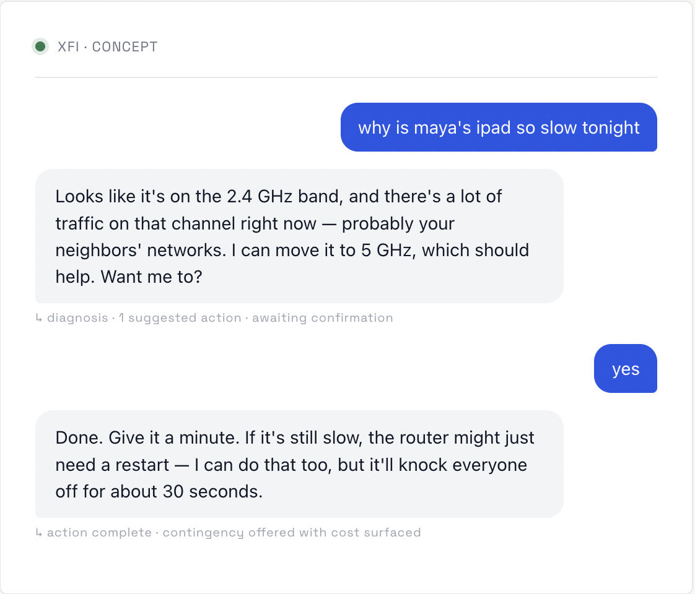

A speculative redesign of Comcast's xFi exploring conversational and voice-first home network controls.
I was a designer on the original xFi launch (2016–2018). This case study is a personal speculative exercise built in 2026 — a reframe of that product if I were starting it today, when conversational AI and agentic systems are viable in ways they weren't a decade ago. Nothing here represents Comcast's current roadmap or my work for them.
Xfinity xFi is an experience from Comcast that allows customers to manage their home WiFi network. Customers can set up and customize their home WiFi network, create guest networks, set parental controls, monitor devices, set routines with connected devices, and troubleshoot connectivity issues. I joined the xFi team in 2016 in the NYC Comcast design studio to build the v1 of the xFi app and web experiences.
We launched in mid 2017 and quickly amassed 10+ million users based on our pairing with the latest gateway (modem + rputer) from xFinity. The launch included the ability to troubleshoot WiFI connections, name devices, assign devices to individuals and manage their connection to WiFi. Eventually more features were added such as parental controls, guest WiFi and conversational controls.
The 2017 xFi team got one thing fundamentally correct. We built an app for people, not network administrators. Early versions we tested with users showed they didn’t want to sort through technical details (such as signal strength, bandwidth per device, channel utilization). They wanted to be informed on what was happening with their WiFi in non-technical language and be guided to take corrective actions.
We gathered network signals and then translated it to the user in non-technical language. But what if an agentic layer could be placed between the user and the network with the ability to explain and interact with the customer when needed?
The interface then becomes a conversation with a system that’s already handling the work. The app still exists but recedes into the background, available when wanted but rarely necessary.
The original product and a speculative version side by side. Instead of requiring an action by the user, the agent can take action in the background.
| User Action | 2017 xFi | 2026 "Agentic" xFi |
|---|---|---|
| "The kids' internet is slow" | Open app › find device › check signal › guess at fix | "Why is Maya's iPad slow?" › app explains, offers one-tap fix |
| Bedtime cutoff | Set up profile › assign devices › configure schedule | "Pause Maya's devices at 9pm on school nights" › done; show me |
| Unknown device on network | List of MAC addresses, user identifies manually | Agent flags it, suggests likely identity, asks one yes/no |
| Network feels broken | Run speed test › restart router › call support | Agent has already noticed, attempted fix, can explain what it tried |
The product splits into a conversational layer that the user interacts with, and an agentic layer doing the actual work.
The seam between conversational and agentic layers is where most of the interesting design questions live. What is the agent allowed to do without asking? What requires a human “yes”? How does the conversation reference work the agent did silently?
This was my second crack and a conversational interface for xFi. When we explored how to do this in the original product we settled on mostly following the structure and conventions of the interface. The degree of intelligence to understand the user was limited.
For this version, wanted to get the tone right. While the original had a brand voice and micro-copy it didn’t have a voice for responses that couldn’t be anticipated.
Voice Principles
Plain over precise: When the agent did something, say what and why in one sentence. Don’t narrate every step. Most users will read the summary and trust it; those who want detail can ask.
Show its work without performing it: “Your network’s been a little slow tonight” instead “2.4 GHz utilization at 78%.” Technical detail is available on request, never the default.
Comfortable with uncertainy:. "Probably a Roku — your downstairs TV" reads better than confidently misidentifying a device. The product gains trust by being honest about what it doesn't know.

The annotations under each response aren’t user-facing — they’re a way of being explicit, as a designer, about what each turn is doing structurally. Every assistant turn is doing some combination of: diagnosing, suggesting, acting, asking, or warning. Naming those moves makes them designable.
How might we best build trust and confidence between the user and the agent.
My take: reversible, low-cost optimizations (channel switching, QoS adjustment) happen silently with a passive log. Anything that affects another household member's experience (pausing a device, changing a schedule) requires confirmation.
A bad channel switch costs 30 seconds of poor signal. A wrongly paused work laptop during a video call costs trust. The autonomy boundary should be drawn around that asymmetry, not around technical complexity.
Schedules and named devices, yes. Conversation history, lightly — enough to handle "do that again" without becoming a surveillance archive. Default retention should be short and visible.
Three failed self-repair attempts on the same issue → agent stops and offers human support. The product's credibility depends on knowing when it's out of its depth.
The interesting research questions for this kind of product are not about discoverability or task success. They’re about trust over time. A few tests I’d be curious to run:
This is a thinking document, not a complete design. I haven’t built screens for every state, run usability tests, or validated the agent’s autonomy boundaries with real users. What’s here is the part I find most worth working through: the architectural and product decisions that come before the screens.
If I were doing this for real, the next phase would be exactly that — pressure-testing the autonomy model with five to ten households over a month, watching where trust forms and where it breaks, then designing the screens around what survives.